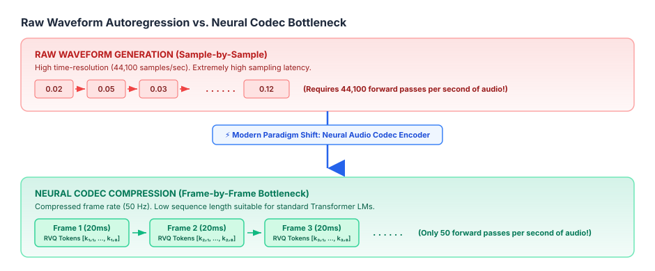
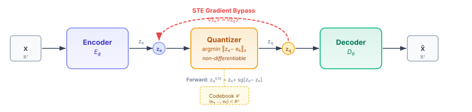
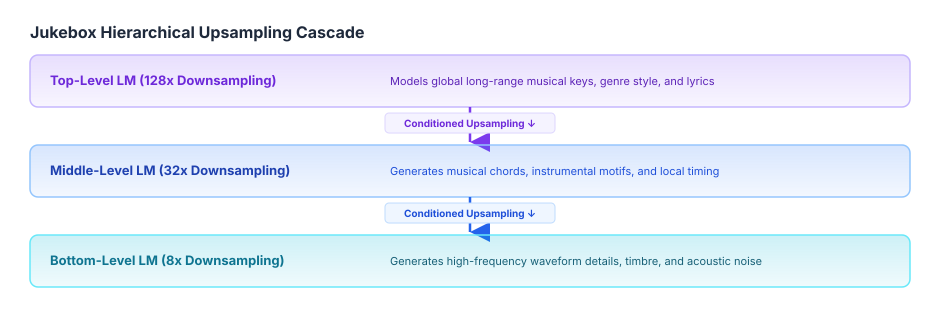
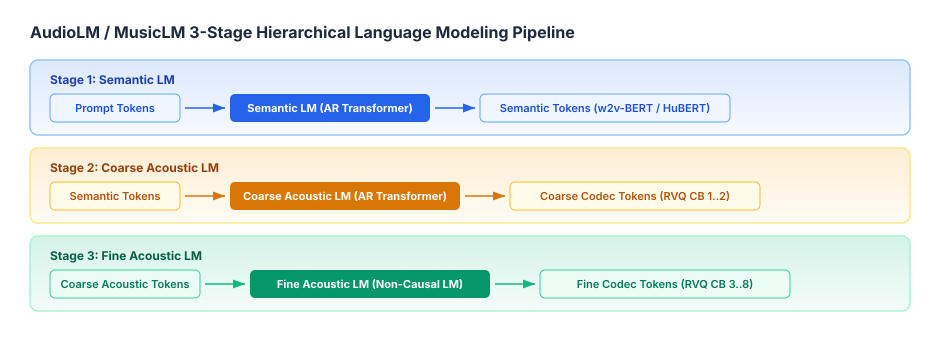
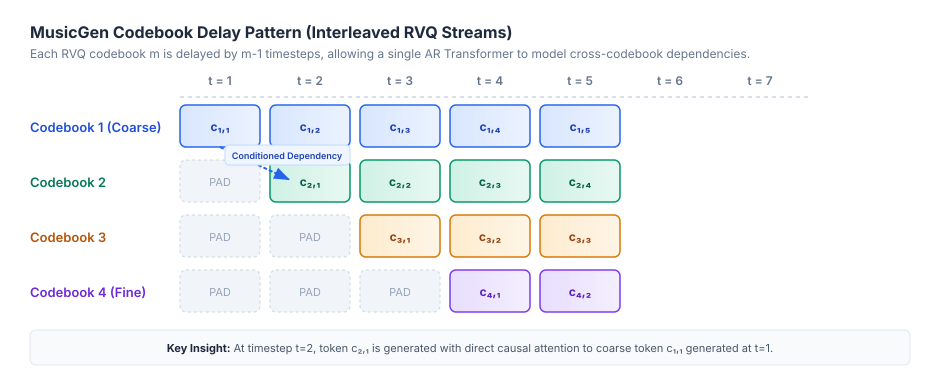
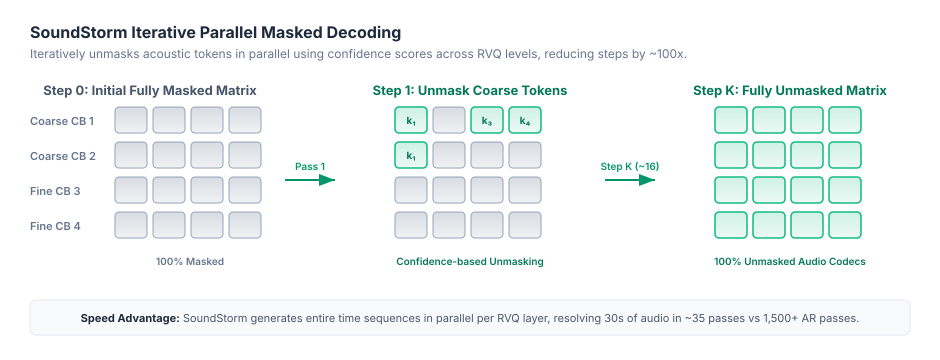
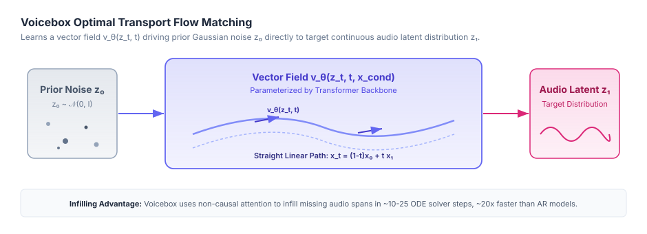

In my previous post on Vector Quantized VAEs (VQ-VAE), we broke down how neural audio encoders compress continuous high-dimensional waveforms into discrete latent bottlenecks. We derived the discrete ELBO, analyzed rate-distortion trade-offs, explored the Straight-Through Estimator (STE), and examined techniques for mitigating codebook collapse.
That post established the foundational encoder side of modern neural audio architectures: how to translate \(24\,\text{kHz}\) or \(44.1\,\text{kHz}\) raw continuous audio into low-frame-rate discrete tokens without losing acoustic fidelity.
Now, we address the logical next question: Once we have compressed audio into a discrete sequence of tokens, how do we actually generate them?
In this post, we build directly upon those neural encoding foundations. We'll trace how Transformers took over audio synthesis—moving from sample-level autoregression to discrete language modeling over neural codec tokens, multi-stream pattern interleaving (like Meta's MusicGen), non-autoregressive parallel masked decoding (SoundStorm), and continuous Flow Matching (Voicebox).
The High-Dimensional Challenge: Raw Audio vs. Text & Vision
To appreciate why modern audio generation depends so heavily on the neural audio encoders we discussed in the previous VQ-VAE post, it helps to recall why generating raw audio directly is so computationally punishing.

Early Waveform Autoregression: WaveNet & SampleRNN
In 2016, DeepMind introduced WaveNet (van den Oord et al.), modeling the joint probability of a raw waveform \(x = \{x_1, x_2, \dots, x_T\}\) as a factorization of conditional probabilities:
\[p(x) = \prod_{t=1}^T p(x_t \mid x_1, x_2, \dots, x_{t-1})\]
WaveNet relied on stacked dilated causal convolutions to exponentially expand its receptive field without exploding parameter counts. To make the target tractable, continuous 16-bit audio samples were quantized into 256 discrete values using \(\mu\)-law compression:
\[f(x) = \text{sign}(x) \frac{\ln(1 + \mu |x|)}{\ln(1 + \mu)}, \quad -1 \le x \le 1, \quad \mu = 255\]
While WaveNet produced ground-breaking voice naturalness, it had a massive deployment drawback: generating 1 second of audio required 24,000 sequential forward passes through a deep convolutional network.
SampleRNN (Mehri et al., 2016) attempted a multi-scale hierarchy of Recurrent Neural Networks, but the fundamental bottleneck remained: modeling raw audio directly at the waveform sampling rate forces your model to spend most of its capacity on high-frequency phase and local noise rather than long-range musical structure or semantics.
A 1-second audio clip at 44,100 Hz contains 44,100 samples. To model 3 minutes of music autoregressively, a Transformer would need to process a sequence of 7,938,000 tokens — far beyond the context window of any practical model. Self-attention scales as \(O(T^2)\), so even at \(T = 8{,}000\) tokens the memory cost is enormous. Neural audio codecs (VQ-VAE + RVQ) solve this by compressing raw waveforms down to just 50–75 frames per second, reducing sequence length by 600–900×.
The solution was the paradigm shift we covered in our VQ-VAE post: Decouple temporal compression (Encoder) from sequence generation (Decoder/Transformer).
The Backbone: Neural Audio Codecs & Multi-Stream Tokenization
As we saw in the VQ-VAE post, a standard discrete vector quantizer maps continuous encoder outputs \(z_e \in \mathbb{R}^D\) to the nearest entries in a codebook \(\mathcal{C} = \{e_1, \dots, e_K\}\).
However, as detailed in our earlier rate-distortion analysis, a single codebook with \(K = 1024\) entries (\(10\,\text{bits}\)) operating at \(50\,\text{Hz}\) caps information throughput at just \(0.5\,\text{kbps}\). This bitrate ceiling is too restrictive to preserve fine acoustic details like subtle timbre, room reverberation, and high-frequency harmonics.

From Single VQ-VAE to Residual Vector Quantization (RVQ)
To expand codebook capacity without triggering the severe codebook collapse dynamics we analyzed in the previous post, modern neural codecs—such as SoundStream (Zeghidour et al., 2021), EnCodec (Défossez et al., 2022), and Descript Audio Codec (DAC) (Kumar et al., 2023)—extend VQ-VAE into Residual Vector Quantization (RVQ).
Instead of quantizing \(z_e\) once, RVQ cascades \(M\) separate quantizers in series. Each successive quantizer fits the residual error left behind by all preceding quantizers:
\[\begin{aligned} r_1 &= z_e \\ v_1 &= Q_1(r_1), \quad r_2 = r_1 - v_1 \\ v_2 &= Q_2(r_2), \quad r_3 = r_2 - v_2 \\ &\;\;\vdots \\ v_M &= Q_M(r_M), \quad r_{M+1} = r_M - v_M \end{aligned}\]
The final quantized latent vector \(z_q\) reconstructed by the encoder pipeline is the sum of the quantized residual vectors across all \(M\) codebook levels:
\[z_q = \sum_{m=1}^M v_m = \sum_{m=1}^M e^{(m)}_{k_m}\]
Where \(k_m \in \{1, \dots, K\}\) is the discrete index selected from the \(m\)-th codebook \(\mathcal{C}_m\).
Acoustic vs. Semantic Tokens
In modern audio generation, we distinguish between two primary classes of discrete representations:
| Token Type | Source Models | Frame Rate | Information Captured | Primary Use Case |
|---|---|---|---|---|
| Semantic Tokens | HuBERT, w2v-BERT, Whisper | 25 – 50 Hz | Phonemes, spoken content, global musical structure (discards acoustics & speaker identity) | High-level sequence modeling, speech understanding |
| Acoustic Tokens | EnCodec, SoundStream, DAC | 50 – 100 Hz | Timbre, prosody, environment, room reverberation, phase reconstruction | High-fidelity audio synthesis & reconstruction |
Decoupling what is being said (semantic) from how it sounds (acoustic) turned out to be the master key for building robust audio language models.
Autoregressive (AR) Audio Transformers
Once the neural encoder transforms audio into discrete token streams, generating audio looks remarkably like natural language processing. But there's a key structural difference: RVQ gives us a 2D matrix of tokens (\(M\) codebooks \(\times\) \(S\) time steps) rather than a simple 1D sequence of words.
Let's look at how major papers addressed this multi-stream autoregressive challenge.
Jukebox (OpenAI, 2020)
Jukebox (Dhariwal et al.) was one of the earliest large-scale Transformer models for music generation. Building on top of VQ-VAE encoders, it used a 3-level hierarchical architecture that downsampled raw \(44.1\,\text{kHz}\) audio by factors of \(8\times\), \(32\times\), and \(128\times\).

Jukebox trained separate autoregressive LMs at each level. The Top LM generated high-level codes, while the Middle and Bottom LMs were upsampling Transformers conditioned on upper-level codes. Although Jukebox showed incredible musical versatility, its multi-stage ancestral sampling was incredibly slow—taking several hours to render a 1-minute song.
AudioLM (Google, 2022) & MusicLM (Google, 2023)
AudioLM (Borsos et al.) recognized that trying to predict raw codec tokens autoregressively from scratch often leads to long-term incoherence. Instead, AudioLM decoupled generation into a hierarchical 3-stage language modeling pipeline:

- Semantic LM: An autoregressive Transformer models w2v-BERT semantic tokens. This enforces long-term structural and linguistic consistency.
- Coarse Acoustic LM: Conditioned on semantic tokens, a second Transformer predicts coarse acoustic tokens (RVQ levels 1 and 2 from SoundStream).
- Fine Acoustic LM: A non-causal Transformer predicts fine acoustic tokens (RVQ levels 3 through 8) conditioned on the coarse tokens.
MusicLM (Agostinelli et al., 2023) built directly on AudioLM's architecture, substituting text-to-speech conditions with joint MuLan text-audio embeddings to achieve high-quality text-to-music generation.
VALL-E (Microsoft, 2023)
VALL-E (Wang et al.) reformulated Text-to-Speech (TTS) as an in-context language modeling task over EnCodec tokens. Given a 3-second acoustic prompt \(a\) and text phoneme transcript \(x\), VALL-E synthesizes target audio matching the prompt speaker's voice.
VALL-E split its generation mechanism into two complementary Transformer architectures:
- Autoregressive (AR) Model: Predicts the 1st RVQ codebook level \(c_{:, 1}\) sequentially, conditioned on phonemes \(x\) and prompt \(a_{:, 1}\): \[p(c_{:, 1} \mid x, a_{:, 1}) = \prod_{t=1}^T p(c_{t, 1} \mid c_{<t, 1}, x, a_{:, 1})\]
- Non-Autoregressive (NAR) Model: Predicts the remaining codebook levels \(c_{:, 2:M}\) iteratively level-by-level in parallel: \[p(c_{:, m} \mid c_{:, <m}, x) = \prod_{t=1}^T p(c_{t, m} \mid c_{:, <m}, x)\]
By using this hybrid approach, VALL-E preserved prosodic flow with its AR model for the base layer, while using its NAR model to efficiently fill in acoustic timbre across remaining layers.
MusicGen & Pattern Interleaving (Meta, 2023)
When Meta published MusicGen (Copet et al., 2023), they asked a fundamental architectural question: Can we train a single-stage autoregressive Transformer to predict all \(M\) codebook streams simultaneously without cascading multiple models?
To answer this, they evaluated three distinct codebook layout patterns:

Why the Delay Pattern Wins
- Flattening multiplies the transformer sequence length by \(M\). If \(M=8\), attention memory scales by \(8^2 = 64\times\), making inference slow and expensive.
- Parallel predicts codebook heads independently at time \(t\). However, because Codebook 2 at time \(t\) cannot condition on Codebook 1 at time \(t\), generation quality degrades sharply.
- Delay Pattern: By shifting each codebook \(m\) by \(m-1\) time steps, Codebook 2 at frame \(t\) is evaluated at step \(t+1\), meaning it can directly attend to Codebook 1 from step \(t\)!
This simple offset trick enables a single standard Transformer decoder to model all \(M\) codebook streams autoregressively in a single forward pass per time frame.
Think of it like a staircase: Codebook 1 starts at step 1, Codebook 2 starts at step 2, Codebook 3 at step 3, and so on. Because Codebook 2 is one step behind in time, the Transformer sees Codebook 1's token at the previous time frame as context before predicting Codebook 2's token at the current frame — no architectural change required, just a clever time-shift. This is why MusicGen can use a single decoder and still respect inter-codebook dependencies.
Non-Autoregressive (NAR) & Masked Parallel Decoding
Autoregressive models suffer from two major limitations:
- Inference Latency: Generating 30 seconds of audio at \(50\,\text{Hz}\) requires \(1,500\) sequential forward passes.
- Lack of Infilling/Editing: AR models generate strictly left-to-right. You cannot ask an AR model to replace a 1-second word in the middle of an existing audio stream.
This led to the creation of SoundStorm (Borsos et al., Google 2023).

How SoundStorm Works
SoundStorm replaces AudioLM's acoustic LMs with a bidirectional Conformer architecture trained on iterative parallel masked prediction, inspired by MaskGIT (Chang et al., 2022) for images.
Given RVQ token matrix \(Y \in \{1, \dots, K\}^{T \times M}\):
- Hierarchy-Aware Masking: During training, SoundStorm samples a time step \(t\) and RVQ level \(m\). All tokens at levels \(> m\) are fully masked. Tokens at level \(m\) are randomly masked according to a cosine mask schedule: \[\gamma(r) = \cos\left(\frac{\pi}{2} r\right), \quad r \in [0, 1]\]
- Confidence-Based Parallel Decoding: At inference, SoundStorm fills in tokens level by level. For a given RVQ level \(m\), it predicts all time frames in parallel, computes output softmax probabilities as confidence scores, retains the top-\(P\%\) highest confidence tokens, and iteratively unmasks the rest over a small fixed number of steps (e.g., 8 to 16 steps per level).
Performance Benchmark
Because SoundStorm generates all time steps in parallel within each RVQ layer, it reduces the total forward passes needed for a 30-second clip from over 1,500 steps down to ~35 steps, achieving a \(100\times\) speedup over AudioLM while delivering identical or superior acoustic quality!
An autoregressive model generating 30 seconds of audio at 50 Hz needs 1,500 sequential decoder steps — each step must complete before the next begins. SoundStorm instead generates all \(T\) time positions simultaneously in each round. With only 8–16 refinement rounds per RVQ level and 8 RVQ levels, that's at most ~128 total forward passes — a 10–15× reduction on top of the parallel within-round speedup. The key insight is that masked prediction doesn't need strict left-to-right causality; bidirectional context makes each guess more accurate, so fewer iterations are needed.
Continuous Latent Transformers (Flow Matching & Latent Diffusion)
While discrete neural codecs transformed audio generation, discrete vector quantization introduces a hard compression bottleneck: quantization noise can sometimes cause subtle phase distortion, buzzing artifacts, or robotic voice edges.
To bypass discretization errors entirely, researchers turned to continuous latent spaces paired with Flow Matching and Diffusion Transformers (DiT).
Voicebox (Meta, 2023): Flow Matching for Audio
Voicebox (Le et al.) abandoned discrete autoregressive language modeling in favor of Continuous Normalizing Flows (CNF) trained via Optimal Transport Flow Matching (Lipman et al., 2022).

The Mathematics of Flow Matching
Instead of predicting discrete tokens, Voicebox learns a time-dependent vector field \(v_\theta(z_t, t)\) that maps simple Gaussian noise \(z_0 \sim \mathcal{N}(0, I)\) to the continuous latent distribution \(z_1 \sim p_{\text{data}}\) of audio features (e.g., 80-band mel-spectrograms).
The probability path between noise \(x_0\) and target sample \(x_1\) is defined linearly:
\[x_t = (1 - t) x_0 + t x_1, \quad t \in [0, 1]\]
The target vector field driving this trajectory is simply the constant velocity vector \((x_1 - x_0)\). The Flow Matching objective optimizes a Transformer backbone to match this target vector field:
\[\mathcal{L}_{\text{FM}}(\theta) = \mathbb{E}_{t \sim U(0, 1), p(x_0, x_1)} \left\| v_\theta(x_t, t, x_{\text{context}}) - (x_1 - x_0) \right\|_2^2\]
Voicebox Capabilities
Because Voicebox uses non-causal bidirectional attention, it natively excels at speech infilling. By masking arbitrary spans of context audio, Voicebox can perform:
- Zero-shot text-to-speech synthesis
- In-context audio editing and noise removal
- Cross-lingual voice conversion
Inference takes only 10–25 ODE solver steps (using Euler or Midpoint integrators), making it roughly \(20\times\) faster than VALL-E.
Both Flow Matching and Diffusion define a process that maps Gaussian noise to data, but their training objectives differ. Diffusion models predict the noise \(\epsilon\) added at each step (DDPM) or the score \(\nabla_x \log p_t(x)\) (Score Matching), and require 100–1000 denoising steps at inference. Flow Matching instead learns a straight-line vector field \(v_\theta(x_t, t) = x_1 - x_0\) that maps noise to data along optimal-transport trajectories — this makes the ODE much easier to integrate in just 10–25 steps. The result is identical audio quality at a fraction of the compute cost.
Stable Audio (Stability AI, 2023/2024): Continuous Latent DiT
For music generation up to 3 minutes long at \(44.1\,\text{kHz}\) stereo, Stable Audio (Evans et al.) used a Diffusion Transformer (DiT) operating on a continuous Variational Autoencoder (VAE) latent space.
By passing continuous timing embeddings (e.g., seconds_start = 0, seconds_total = 180), the model learns precise temporal control, allowing users to request a structural intro, build-up, or outro at exact timestamps.
PyTorch Implementation: RVQ Delay Pattern & Causal Masking
To help make these concepts concrete, let me show you how to implement Meta's MusicGen RVQ Delay Pattern in PyTorch.
This self-contained module handles both the codebook token shifting (interleaving) and the custom attention mask generation needed
import torch
import torch.nn as nn
import torch.nn.functional as F
class RVQDelayPatternInterleaver(nn.Module):
"""
Applies the Delay Pattern (interleaving) to multi-codebook RVQ sequences.
Converts [B, M, T] -> [B, M, T + M - 1].
Args:
num_codebooks (int): Number of RVQ codebooks M.
pad_token_id (int): Token ID used for padding.
"""
def __init__(self, num_codebooks: int, pad_token_id: int):
super().__init__()
self.num_codebooks = num_codebooks
self.pad_token_id = pad_token_id
def build_delay_pattern(self, tokens: torch.Tensor) -> torch.Tensor:
"""
Args:
tokens: Tensor [Batch, Codebooks (M), Time (T)]
Returns:
delayed_tokens: Tensor [Batch, Codebooks (M), T + M - 1]
"""
B, M, T = tokens.shape
assert M == self.num_codebooks
delayed_T = T + M - 1
delayed_tokens = torch.full(
(B, M, delayed_T),
fill_value=self.pad_token_id,
dtype=tokens.dtype,
device=tokens.device,
)
for m in range(M):
# Shift codebook m rightward by m timesteps
delayed_tokens[:, m, m : m + T] = tokens[:, m, :]
return delayed_tokens
def revert_delay_pattern(self, delayed_tokens: torch.Tensor, original_T: int) -> torch.Tensor:
"""Reverts the delay pattern back to aligned [B, M, T] format."""
B, M, _ = delayed_tokens.shape
tokens = torch.zeros((B, M, original_T), dtype=delayed_tokens.dtype, device=delayed_tokens.device)
for m in range(M):
tokens[:, m, :] = delayed_tokens[:, m, m : m + original_T]
return tokens
def build_delayed_causal_mask(seq_len: int, num_codebooks: int, device: torch.device) -> torch.Tensor:
"""
Generates a causal attention mask for a flattened stream of delayed RVQ tokens.
Shape: [seq_len * num_codebooks, seq_len * num_codebooks]
"""
time_indices = torch.arange(seq_len, device=device).repeat_interleave(num_codebooks)
codebook_indices = torch.arange(num_codebooks, device=device).repeat(seq_len)
effective_step = time_indices + codebook_indices
causal_mask = effective_step.unsqueeze(1) >= effective_step.unsqueeze(0)
return causal_mask # BoolTensor
if __name__ == "__main__":
B, M, T = 2, 4, 10
pad_id = 0
interleaver = RVQDelayPatternInterleaver(num_codebooks=M, pad_token_id=pad_id)
dummy_tokens = torch.arange(1, T + 1).unsqueeze(0).unsqueeze(0).repeat(B, M, 1)
delayed = interleaver.build_delay_pattern(dummy_tokens)
reverted = interleaver.revert_delay_pattern(delayed, original_T=T)
print(f"Original shape : {dummy_tokens.shape}")
print(f"Delayed shape : {delayed.shape}")
print(f"Reverted match : {torch.equal(dummy_tokens, reverted)}")
mask = build_delayed_causal_mask(seq_len=T, num_codebooks=M, device=dummy_tokens.device)
print(f"Causal Mask shape: {mask.shape}")
Original shape : torch.Size([2, 4, 10])
Delayed shape : torch.Size([2, 4, 13])
Reverted match : True
Causal Mask shape: torch.Size([40, 40])
Comparative Taxonomy & Trade-off Matrix
Here is a side-by-side comparison of the landmark audio Transformer architectures:
| Model | Paradigm | Tokenizer / Representation | Multi-Codebook Strategy | Sampling Latency | Key Strengths |
|---|---|---|---|---|---|
| Jukebox (OpenAI 2020) | Autoregressive (AR) | Multi-scale VQ-VAE (8x, 32x, 128x) | Hierarchical multi-stage upsampling LMs | Very Slow (\(O(T)\) sample rate) | Early musical pioneer; rich vocal/instrumental diversity |
| AudioLM (Google 2022) | Hierarchical AR | w2v-BERT (Semantic) + SoundStream (Acoustic) | 3-Stage LM: Semantic \(\to\) Coarse Acoustic \(\to\) Fine Acoustic | Medium (\(O(T)\) frame rate) | High speech continuation naturalness without text annotations |
| VALL-E (Microsoft 2023) | Hybrid AR + NAR | EnCodec (24kHz, 8 codebooks) | AR for 1st codebook; NAR for remaining codebooks | Medium-Fast | In-context zero-shot TTS, speaker cloning from 3s prompt |
| MusicGen (Meta 2023) | Single-Stage AR | EnCodec (32kHz, 4 codebooks) | Delay Pattern Interleaving | Medium (\(O(T)\) frame rate) | Text-to-music & melody-conditioned music generation |
| SoundStorm (Google 2023) | Non-Autoregressive (NAR) | SoundStream / EnCodec tokens | Bidirectional Conformer with Iterative Masked Decoding | Very Fast (~16–35 steps) | \(100\times\) faster than AR models; long-form dialogue synthesis |
| Voicebox (Meta 2023) | Continuous Flow Matching | Mel-Spectrogram / Continuous Latents | Optimal Transport Flow Matching on Transformer | Fast (~10–25 ODE steps) | Seamless speech infilling, editing, zero-shot TTS |
| Stable Audio (Stability AI 2024) | Latent Diffusion | Continuous Spectrogram VAE (64x) | Diffusion Transformer (DiT) with timing embeddings | Fast (~30–50 steps) | 3-minute stereo \(44.1\,\text{kHz}\) music generation with timing control |
Open Challenges & The Frontier
While audio generation has advanced rapidly, several hard challenges remain active areas of research:
- Full-Band High Fidelity (\(48\,\text{kHz}\) Stereo): Most current neural codecs compress to \(24\,\text{kHz}\) or \(32\,\text{kHz}\) mono. Scaling to studio-grade \(48\,\text{kHz}\) uncompressed stereo without inflating RVQ frame rates requires even higher compression efficiency.
- Real-Time Conversational Latency (< 150 ms): Full duplex speech-to-speech models (like GPT-4o) require streamable encoders and decoders that operate with sub-100 millisecond glass-to-glass latency.
- Long-Form Musical Coherence: While current models generate convincing 30-second music riffs, maintaining structural musical coherence across 3–5 minutes (transitions between verses, hooks, bridge sections, and key signatures) remains difficult.
- Watermarking and Provenance: As voice synthesis quality achieves human parity, robust imperceptible audio watermarking (such as Google's SynthID or EnCodec frame watermarking) is critical for preventing unauthorized voice spoofing and deepfakes.
Summary Reading List & Primary References
If you want to dig deeper into the code and mathematics, here are the essential papers in order:
- VQ-VAE & Neural Audio Encoders: My previous post Vector Quantized VAEs (VQ-VAE): Math, Codebook Collapse & PyTorch Implementation.
- WaveNet: van den Oord et al., 2016. WaveNet: A Generative Model for Raw Audio.
- SoundStream: Zeghidour et al., 2021. SoundStream: An End-to-End Neural Audio Codec.
- EnCodec: Défossez et al., 2022. High Fidelity Neural Audio Compression.
- AudioLM: Borsos et al., 2022. AudioLM: a Language Modeling Approach to Audio Generation.
- VALL-E: Wang et al., 2023. Neural Codec Language Models are Zero-Shot Text to Speech Synthesizers.
- MusicGen: Copet et al., 2023. Simple and Controllable Music Generation.
- SoundStorm: Borsos et al., 2023. SoundStorm: Efficient Parallel Audio Generation.
- Voicebox: Le et al., 2023. Voicebox: Text-Guided Multilingual Universal Speech Generation at Scale.
- Stable Audio: Evans et al., 2024. Fast Timing-Conditioned Latent Audio Diffusion.